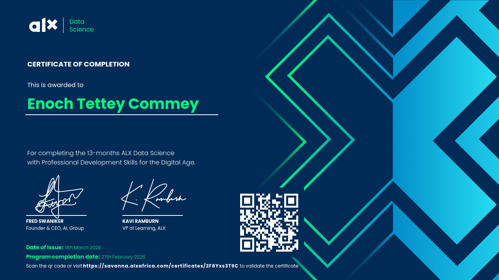
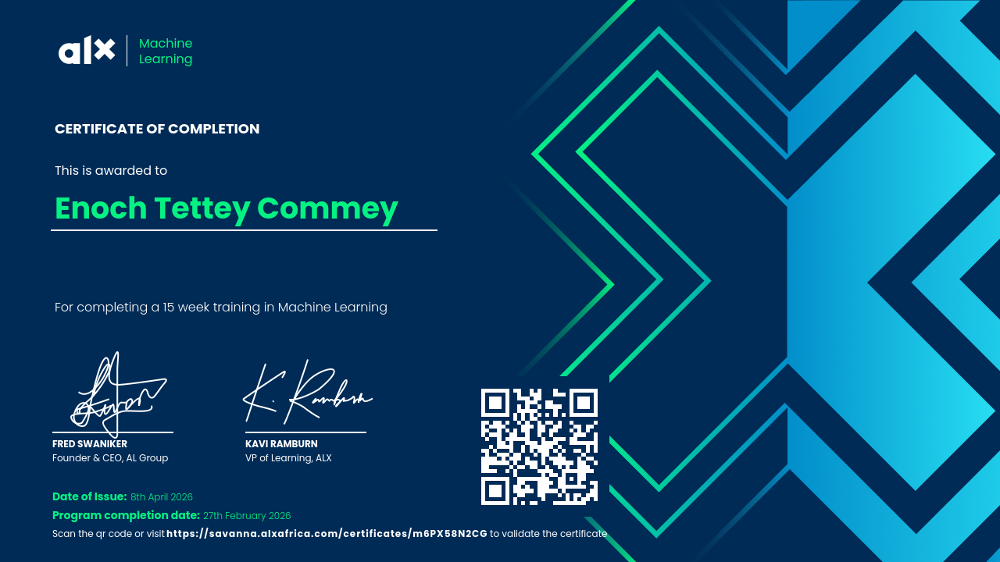
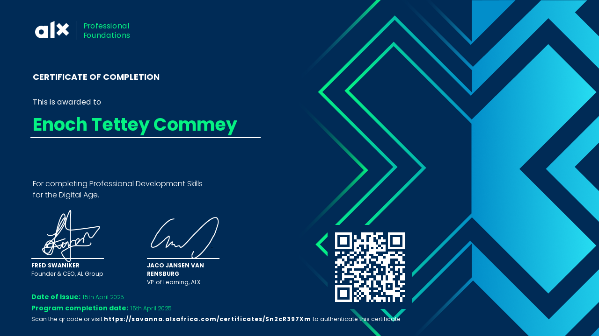

Data analytics
Cleaning and analyzing data, building visualizations, identifying trends, and presenting findings to support decisions.

PROFESSIONAL PORTFOLIO · ACCRA, GHANA
I am Enoch Tettey Commey, a Mathematics and Statistics graduate with practical experience in inventory control, record management, reporting, and administrative support. I use Excel, Power BI, and Python to organize information, analyze data, and communicate useful findings. I also bring a detail-oriented approach to customer service, coordination, and day-to-day operations
Open to opportunities in data analytics, administration, operations, and customer support.
A LITTLE ABOUT ME
I hold a BSc in Mathematics and Statistics from the University of Ghana. My experience includes administrative support, internal audit support, documentation, record management, and operational work.
I bring a careful approach to handling information, communicating with people, and following processes. I’m developing my portfolio through practical projects that demonstrate data cleaning, analysis, reporting, and service-oriented problem solving.
WHAT I BRING
Cleaning and analyzing data, building visualizations, identifying trends, and presenting findings to support decisions.
Maintaining accurate records, preparing reports and meeting minutes, managing correspondence, and supporting administrative processes.
Communicating professionally, responding to enquiries, verifying information, following up on issues, and supporting positive customer experiences.
Tracking stock movements, checking quantities and documentation, recording returns and discrepancies, and supporting daily operations.
Tools listed reflect my current skill areas; individual project pages will show the specific tools and methods used.
CAREER JOURNEY
Warehouse Specialist
Assistant Manager
Data Verification Executive
Finance & Administration · National Service
Internal Audit Unit · National Service
This section highlights selected experience.
BUILDING EVIDENCE
A practical demonstration built with fictional data, plus planned case studies currently in development.

Excel workbook using fictional records to calculate receipts, issues, returns, closing stock, and closing stock value.
Portfolio demonstration · Synthetic data

Analyzed sample sales data using Microsoft Excel and Power BI to evaluate revenue by product, monthly sales trends, and location performance. Built KPI cards, interactive category and location slicers, and charts to support data-driven decision-making.

Used Python and Pandas to analyze customer enquiry response times, resolution rates, and customer ratings across different channels and categories.
Completed · Fictional dataset
LEARNING & DEVELOPMENT
University of Ghana, Legon
Mathematical methods, statistics, probability, and quantitative reasoning.ALX Africa
Data analytics training and professional development.ALX Africa
Professional skills development.CONTINUOUS LEARNING
Professional training and technical learning completed through ALX Africa.
ALX Africa · Issued August 2025
.png)
ALX Africa · Issued November 2025
ALX Africa · Issued March 2026

ALX Africa · Issued April 2026

ALX Africa · Issued April 2025

LET'S CONNECT
I’d be glad to discuss opportunities in analytics, administration, operations, and customer support.
Phone+233 54 114 3228
CVView or download my CV (PDF) ↗
LinkedInlinkedin.com/in/enoch-commey-571257359
LocationAccra, Ghana
Connect on LinkedIn ↗